Manual de marca · v1.0
Logo, color y tipografía
Marca · Logo
Concepto del logo · PU
Progreso Urbano: la P va primero y queda encima. Su lóbulo cruza sobre la U, cuyo fuste derecho sube hasta la misma altura que la P. Lenguaje “Ascenso”: trazo grueso, curvas desde círculos concéntricos y un corte de un módulo bajo la P.
P primero
El fuste alto de la P es la columna: solidez y respaldo legal.
P encima
El lóbulo de la P cruza sobre la U: el progreso guía y lo urbano lo sostiene.
Dos tonos
Tinta para la P, amarillo Principal para la U: claridad y energía.
Corte de 28 px
Un módulo de pausa bajo la P que da ritmo y modernidad.
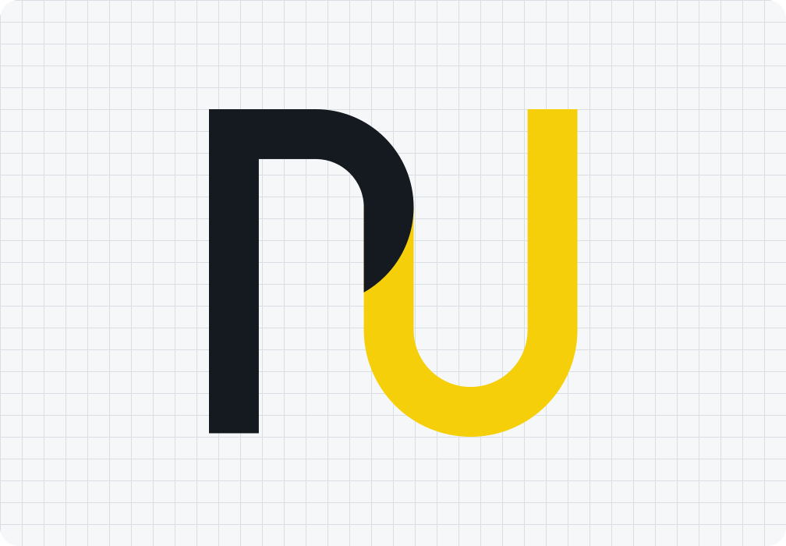
Marca · Logo
Construcción
Retícula de 28 px. Trazo = 2 módulos (56). Lóbulo de la P: radios 110 / 54. Curva de la U: radios 120 / 64. Corte de 28 px (1 módulo). La U baja 4 px bajo la línea base como compensación óptica.
- Módulo
- 28 px (½ trazo)
- Trazo
- 56 px · 2 módulos
- Curva U
- R 120 · r 64
- Lóbulo P
- R 110 · r 54
- Corte
- 28 px · 1 módulo
- Tamaño mínimo
- 24 px de alto (digital) · 8 mm (impreso)
- Compensación óptica
- U +4 px bajo la línea base
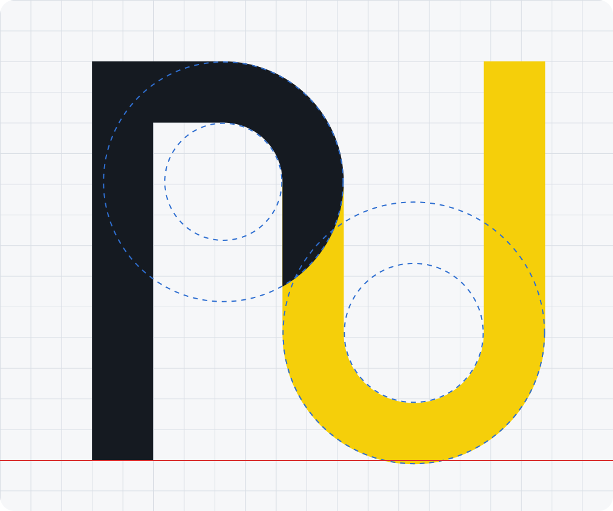
Marca · Logo
Versiones del logo
Horizontal es la versión principal. Usa la vertical en formatos cuadrados y el símbolo solo en espacios pequeños (favicon, avatar). Margen de protección = ancho del hueco de la P.
X = margen de protección (36 px a este tamaño)
Marca · Color
Colores
Amarillo como acento, nunca como fondo dominante de texto. Proporción de uso aproximada: 60 Blanco · 20 Neutral/Tinta · 15 Principal · 5 Secundario y Luz.
Principal
HEX #F5CF0A
RGB 245 · 207 · 10
Secundario
HEX #E6CE4F
RGB 230 · 206 · 79
Luz
HEX #F7F2A6
RGB 247 · 242 · 166
Neutral
HEX #647488
RGB 100 · 116 · 136
Tinta
HEX #151A21
RGB 21 · 26 · 33
Blanco
HEX #FEFEFF
RGB 254 · 254 · 255
Marca · Tipografía
Tipografía
Montserrat da carácter y autoridad a titulares y logotipo. Google Sans Flex asegura lectura clara en textos largos.
Aa
Montserrat
Titulares · Logotipo · Botones
Bold 700 · SemiBold 600
Aa
Google Sans Flex
Textos · Interfaz · Documentos
Acompañamos a empresas y personas en cada decisión legal, con claridad, cercanía y rigor.
Regular 400 · Medium 500 · SemiBold 600
Marca · Aplicaciones
Perfil personal de Claudia Niño. La foto de perfil lleva la curva de la U; el banner usa la fotografía de Bogotá en blanco y negro con el panel tinta y las formas del símbolo.
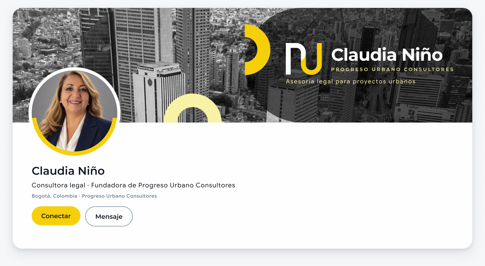
Foto de perfil
400 × 400 px · PNG · LinkedIn la recorta en círculo; el arco amarillo queda dentro del recorte.
Banner
1584 × 396 px · PNG @1x y @2x · deja libre la esquina inferior izquierda (la cubre la foto de perfil).
Archivos
La foto y los banners se entregan en PNG, listos para subir a LinkedIn.
Marca · Aplicaciones
LinkedIn · versiones del banner
Cinco fotografías de Bogotá con el mismo tratamiento en blanco y negro. Todas comparten el panel tinta, el logo y las formas del símbolo.
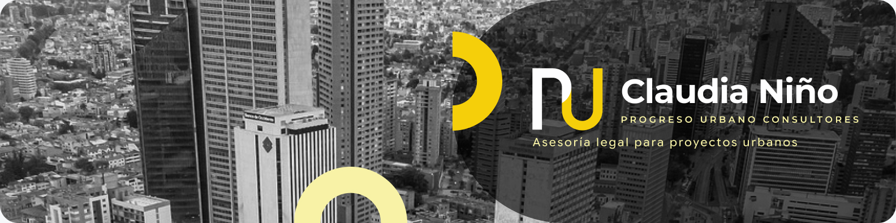
Bogotá · panorámica vertical ★ Principal
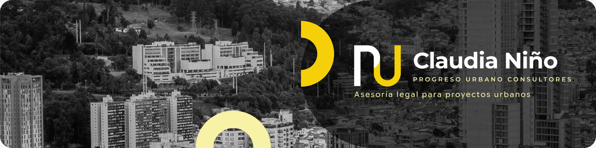
Bogotá · torre y cerros
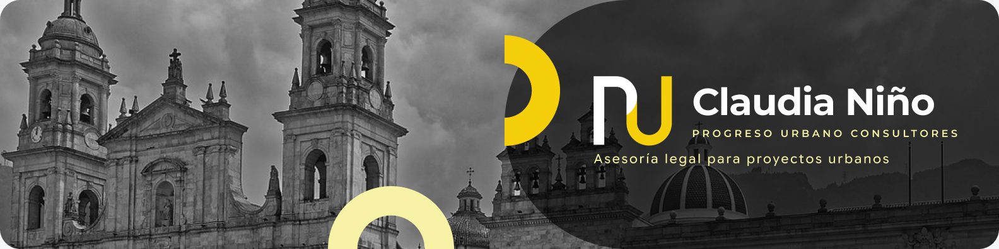
Plaza Bolívar · Catedral
Catedral Primada · fachada
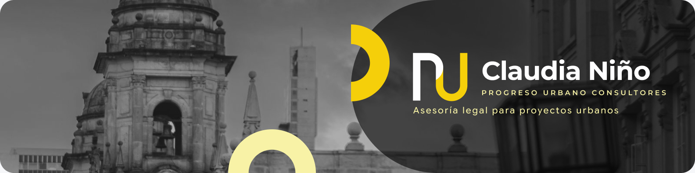
Edificios de ladrillo
Marca · Aplicaciones
LinkedIn · diagramaciones
Cuatro composiciones para el banner. Todas funcionan con las cinco fotografías.
A · Panel derecho
Panel tinta translúcido a la derecha. La más sobria; buena para uso diario.
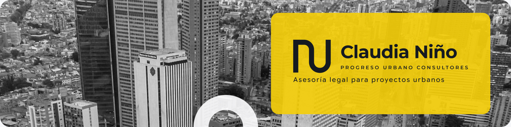
B · Bloque amarillo
Tarjeta amarilla con logo en tinta. Máximo contraste y presencia de marca.
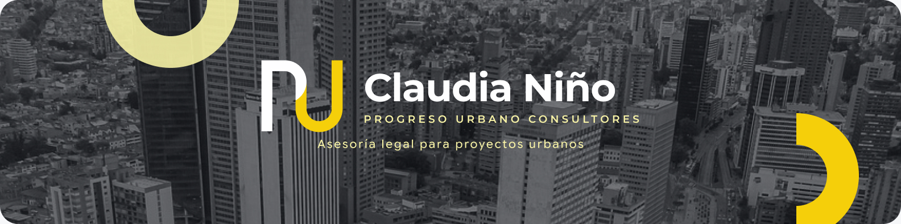
C · Centrado
Velo tinta sobre toda la foto y logo al centro. Ideal en móvil, donde se recortan los lados.
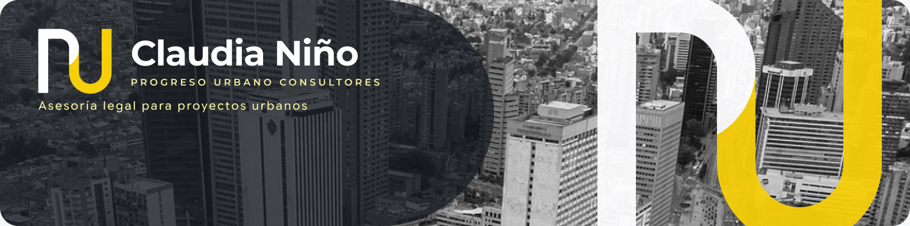
D · Símbolo gigante
Logo arriba a la izquierda y símbolo PU a gran escala. La más expresiva.
Marca · Elementos gráficos
Elementos gráficos
Formas vectoriales que salen del símbolo PU. Úsalas para componer piezas, enmarcar fotos y crear ritmo; cada una admite cualquier color de la paleta.
Lóbulo P
Mitad del lóbulo · R110/r54
Curva U
Base de la U · R120/r64
Arco fino
Fotos de perfil y marcos
Píldora
Bandas y etiquetas grandes
Esquina redonda
Paneles y recortes
Trazo PU
Versión lineal del símbolo (trazo = 1 módulo). Para iconografía y fondos sutiles.
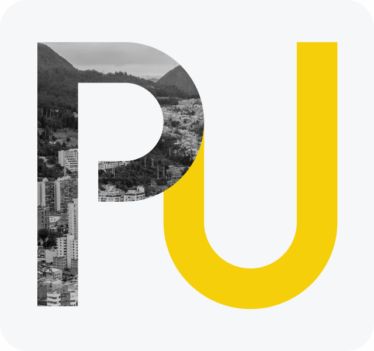
Ventana P
La foto vive dentro de la P; la U queda sólida.
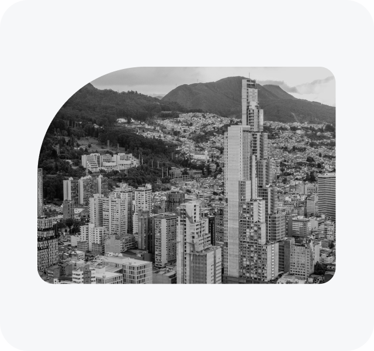
Foto con esquina redonda
Recorte de fotografía de la marca.
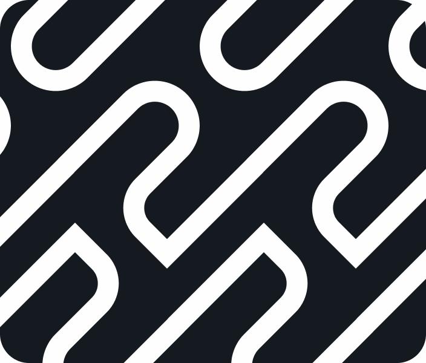
Patrón Progreso
Ver lámina siguiente.
Marca · Elementos gráficos
Patrón “Progreso” y fotografía
Nace de la exploración gráfica: el símbolo sólido girado 45°, con filas alternas invertidas para que cada P se enlace con la U siguiente. Siempre a una sola tinta sobre su fondo.
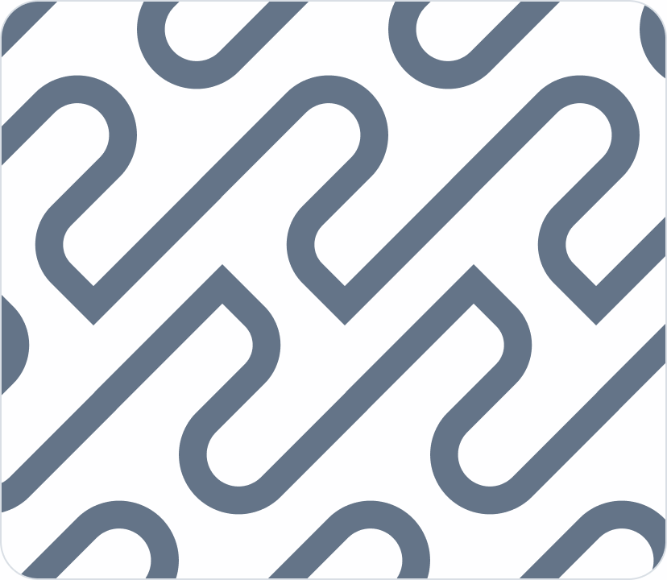
Neutro sobre blanco
Documentos y fondos claros.
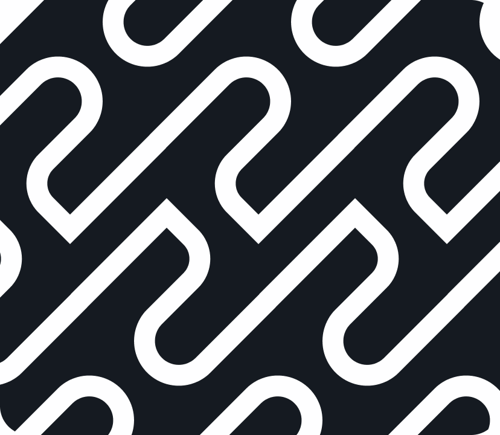
Blanco sobre negro
Portadas, presentaciones, redes.
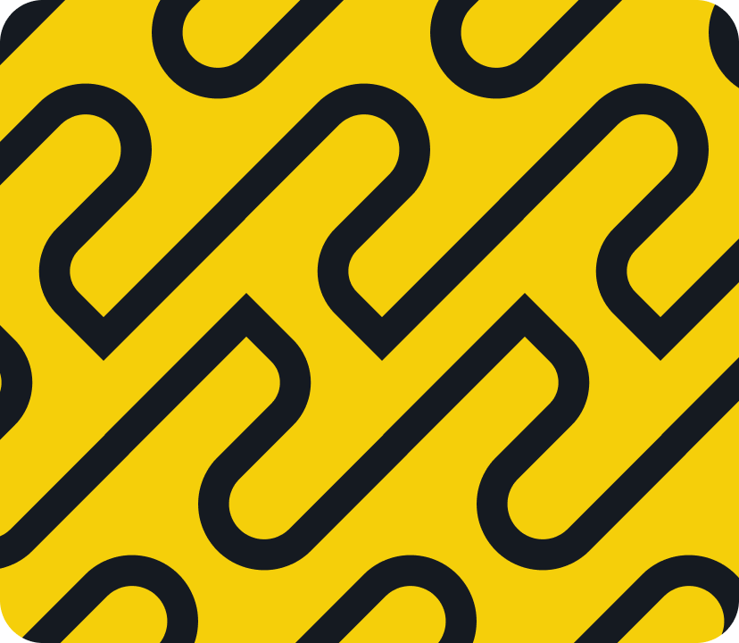
Negro sobre amarillo
Piezas de alto impacto.
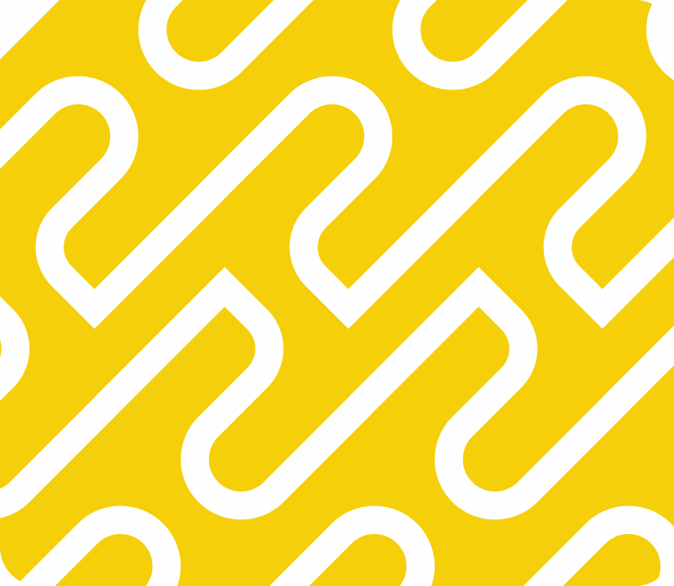
Blanco sobre amarillo
Fondos de marca más suaves.
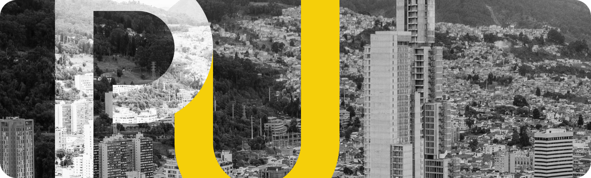
Foto + Ventana P
La P aclara la foto como una ventana; la U amarilla ancla la marca.
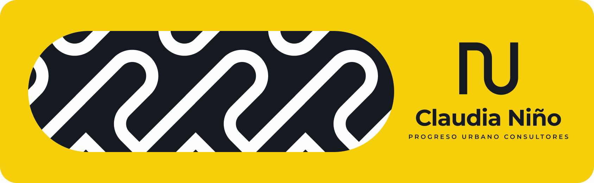
Patrón en píldora
El patrón dentro de una píldora, junto al logo vertical.
Marca · Aplicaciones
Sitio web
Página de inicio con todas las secciones y seis páginas de servicio. Desplázate dentro del navegador para recorrerla.
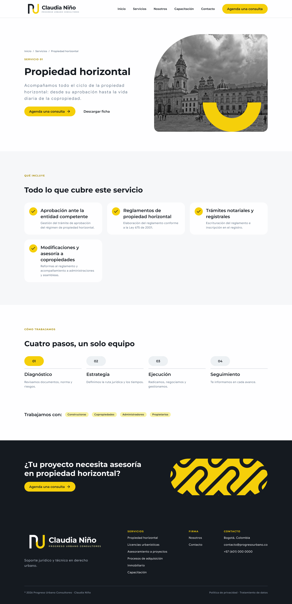
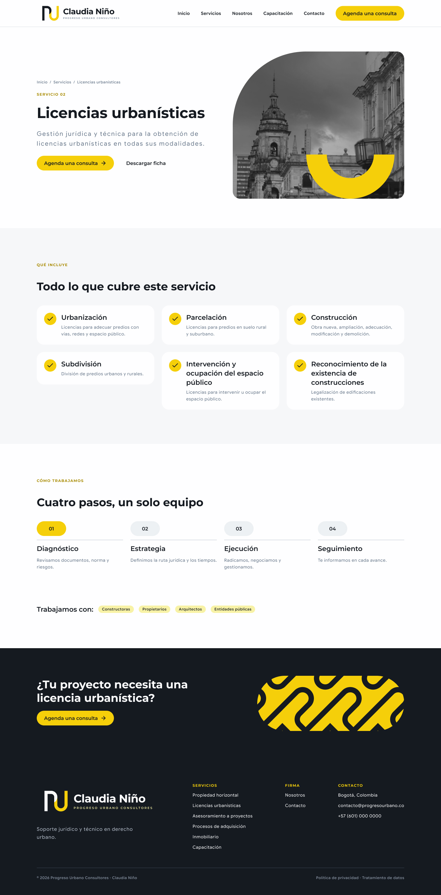
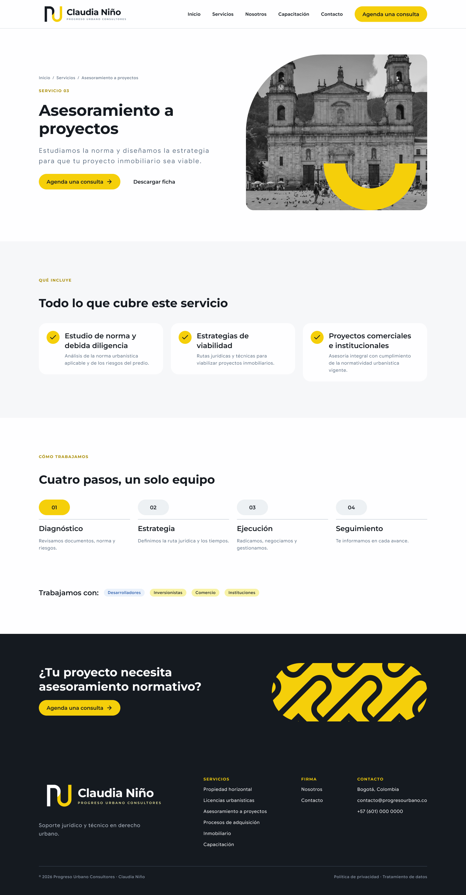
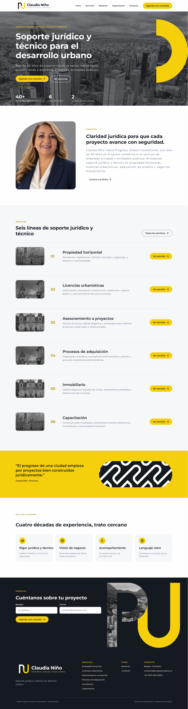
Servicios, cifras y datos de contacto son de ejemplo: se reemplazarán por la información real de la firma.
Marca · Aplicaciones
Sitio web · páginas de servicio
Las seis líneas de servicio comparten estructura: encabezado con fotografía, descripción, alcance y llamada a la acción.
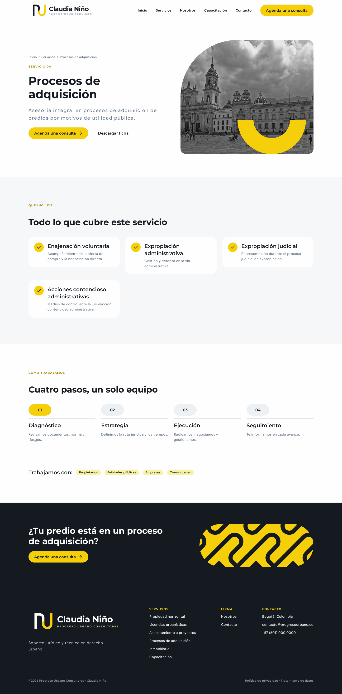
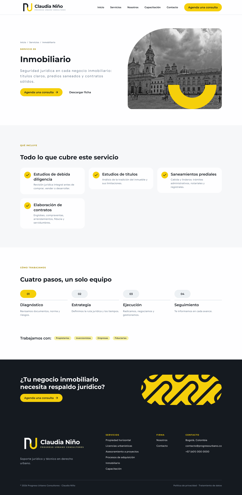
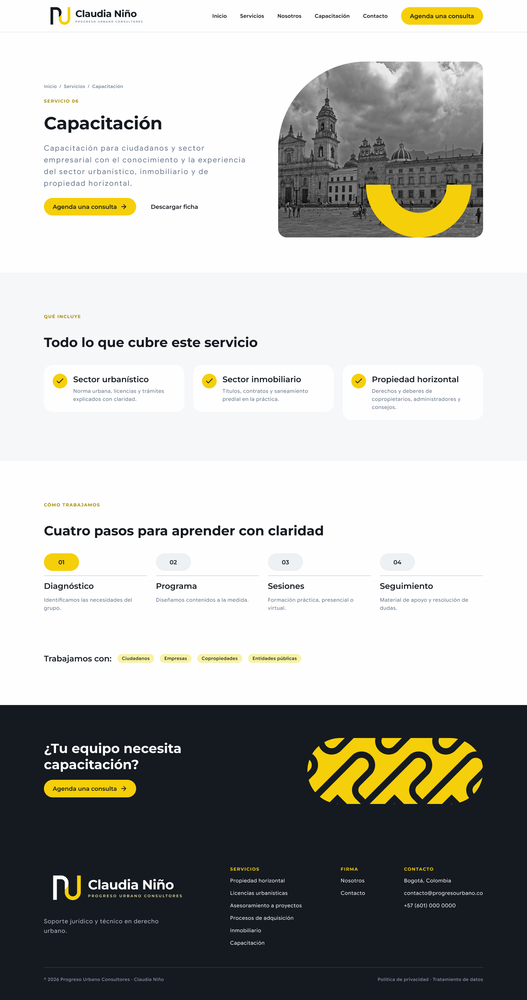
Fotografías: Pixabay (bergslay, Makalu) y Pexels (Gustavo Solmott, Christian Gutiérrez Martínez) · © Claudia Niño · Progreso Urbano Consultores